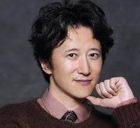

Toshiyuki Araki nasceu em 7 de junho de 1960, em Sendai, Japão, capital da província de Miyagi . Ele cresceu com seu pai, que trabalhava em um escritório na Japan Tobacco, sua mãe, que era dona de casa, e suas irmãs mais novas, um par de gêmeas idênticas quatro anos mais novas que ele. Ele frequentou a Escola Primária Komatsushima , onde ele e seus amigos imitavam os Detetives Mirins das obras de Edogawa Ranpo . Araki nem sempre aspirou a ser um artista de mangá e geralmente passava o tempo brincando ao ar livre ou seguindo crianças mais velhas. Ele explorou toda a cidade com seus amigos, como florestas, pântanos e abrigos antibombas próximos. Juntos, eles construíram uma base secreta usando caixas de madeira e até tentaram procurar ouro enterrado sobre o qual ouviram falar em uma lenda local.
Na sua juventude, Araki era intimidado diariamente pelas suas irmãs e, consequentemente, não gostava de voltar para casa. Embora acreditasse que os seus pais o amavam a ele e às suas irmãs igualmente, sentia-se excluído ao ver as suas irmãs a fazerem tudo juntas. As irmãs de Araki roubavam secretamente os seus lanches, o que o levava a acreditar que nunca tinha comido nada. Ele também afirma que elas conspiravam para que os seus pais o repreendessem apenas a ele depois de uma briga com uma delas. Na escola, os seus professores suspeitavam-lhe injustamente sempre que ocorria algum incidente. Sentindo-se sozinho e incompreendido por todos, passava o tempo sozinho no seu quarto ou na casa do seu avô, onde descobriu os mangás, os filmes e a arte.
Araki credita aos mangás o fato de terem salvado sua vida naquela época, lendo séries clássicas dos anos 60 e 70 como Tomorrow's Joe, Kamui, Ring ni Kakero, Cobra, The Circuit Wolf, Boy of the Wilderness Isamu, Ajihei the Cook, obras de Osamu Tezuka, mangás de samurais e obras de terror de Kazuo Umezu. O primeiro mangá que ele comprou foi MUYONOSUKE, de Takao Saito . Babel II , de Mitsuteru Yokoyama , e as obras de Ikki Kajiwara, como Star of the Giants e Ai to Makoto, o inspiraram significativamente. Ele também foi particularmente influenciado por seu avô, que adorava construir coisas, independentemente do que fossem, e fazia para Araki coisas como modelos e pipas. Seu pai era igual, esculpindo madeira no formato de um iate e deixando-o flutuar na água quando Araki, de 5 anos, pediu que ele comprasse um iate. Por outro lado, sua mãe era mais séria, dizendo-lhe para ouvir músicos como Mozart em vez de Led Zeppelin . No entanto, ela ainda lhe comprava livros de arte antigos e mangás.
Além de mangás, Araki lia a coleção de livros de arte de seu pai, bem como os romances de Edogawa Ranpo e a série Sherlock Holmes . Além disso, ele herdou a paixão do pai por filmes. Em 1966, Araki queria assistir Gamera , mas seu pai o levou para ver Por Uns Dólares a Mais . Desde então, Araki se tornou um grande fã dos faroestes spaghetti de Sergio Leone e de Clint Eastwood. Outras grandes influências para ele foram o artista francês Paul Gauguin e o pintor americano Jasper Johns. Araki não só achava o trabalho de Gauguin impressionante, mas também seu estilo de vida, citando como Gauguin vivia afastado da sociedade no Taiti em busca de sua arte. Assim, Araki também desejava se dedicar a uma única coisa. Foi por volta dessa época que ele começou a ouvir rock estrangeiro, como as músicas de Chicago , Yes , Led Zeppelin , Jackson Browne e Bob Dylan . Como os discos eram muito caros para ele comprar e ele não tinha um gravador de cassetes, ele gravava músicas do rádio usando um enorme gravador de rolo, que ele dizia aos pais que precisava para praticar inglês. Mágica e truques de prestidigitação também o interessavam, então ele comprou livros e praticou muito com cartas, tornando-se bastante bom nisso.
A arte de um jovem Araki no fictício "Shonen Thunder"
Araki acredita que começou a desenhar ainda no jardim de infância ou na primeira série, tentando reproduzir Watari, de Sanpei Shirato , e Harris no Kaze, de Tetsuya Chiba. Ele frequentou aulas de arte em seu bairro e começou a desenhar mais aos sete anos de idade. Araki desenhou seu primeiro mangá aos oito anos, na quarta série, quando um amigo de infância elogiou a composição de sua arte. Esse amigo discutiu as diferenças entre heróis japoneses e americanos e as diferentes maneiras como criadores como Shigeru Mizuki e Kazuo Umezu retratam o medo, ajudando Araki a desenvolver suas habilidades analíticas. Um dia, depois de Araki desenhar um personagem secundário de forma mais impressionante do que o protagonista, seu amigo elogiou o mangá, dizendo que era interessante, o que levou Araki a decidir se tornar um mangaká. No entanto, o mangá não tinha uma boa imagem pública na época, e seus pais e professores o alertaram de que ler mangá o tornaria estúpido. Portanto, Araki teve que desenhar às escondidas dos pais usando tinta da Índia para seguir sua paixão.
Araki jogou beisebol na liga infantil quando estava no ensino fundamental, mas não gostava do aspecto dos esportes coletivos. Por exemplo, se cometesse um erro, seria menosprezado pelos outros. Ele também se irritava quando outra criança era constantemente substituída, pois Araki se considerava um jogador melhor. Alguns anos depois, ele foi para a Escola Secundária Dainohara. Declarando que nunca mais queria participar de um esporte coletivo, ele passou a praticar kendo, influenciado pelo mangá Ore wa Teppei. Sua experiência no kendo parece ter sido morna, pois ele diz que ninguém o elogiava, quer ganhasse ou perdesse uma partida. No entanto, estar no clube de kendo o salvou em uma situação em que ele estava passando por um grupo de quatro ou cinco delinquentes mais velhos em um lugar que ele chamou de "Estrada da Extorsão". Embora tenham ameaçado Araki inicialmente, eles o libertaram ao perceberem que ele fazia parte do clube de kendo, pois também tinham conhecidos no clube. Educacionalmente, suas matérias favoritas eram estudos sociais e ciências, mas ele também se destacava em matemática. Por outro lado, ele se considerava fraco em inglês.
Araki frequentou a Escola Secundária Tohoku Gakuin Tsutsujigaoka. Era uma escola cristã, especificamente protestante , que influenciou seu modo de pensar.
Sedes da Shogakukan e da Shueisha.
Araki começou a submeter seus trabalhos a editoras durante seu primeiro ano na Tohoku Gakuin Tsutsujigaoka High School. No entanto, todas as suas submissões foram rejeitadas. Araki também inscreveu seus trabalhos no Prêmio Tezuka, tendo sido indicado na 14ª edição em 1977 por um one-shot chamado " A Garrafa ", então submetido sob o nome de Toshi Arakino (荒木之利, Arakino Toshi ). Ao mesmo tempo, outros artistas da mesma faixa etária continuavam a causar grande impacto com suas estreias (ex: Yudetamago, Masakazu Katsura ). Araki não conseguia entender por que estava sendo rejeitado, então, um dia, em 1979, decidiu visitar uma editora em Tóquio para obter feedback direto sobre seu trabalho mais recente. Inicialmente, ele pretendia visitar a Shogakukan , editora da Weekly Shōnen Sunday , mas ficou intimidado pelo tamanho do prédio e decidiu levar sua submissão para o prédio menor da Shueisha (editora da Weekly Shonen Jump ) ao lado. Era meio-dia quando ele foi lá, mas um editor novato chamado Ryosuke Kabashima estava presente. Kabashima, após ler a primeira página, prontamente exclamou: "Seu corretivo vazou (Você não corrigiu)": ele foi criticado cada vez que o editor folheava as páginas. Araki, exausto por ter passado a noite em claro, sentiu que ia desmaiar, mas foi instruído a corrigir o trabalho para o Prêmio Tezuka. Meses depois, Araki submeteria um one-shot chamado " Poker Under Arms ", que ganhou o segundo lugar no Prêmio Tezuka.
Araki abandonou a Universidade de Educação de Miyagi antes de se formar. Ele se formou na Faculdade de Design de Sendai , onde estudou moda, e trabalhou como maquiador de manequins. Por volta da mesma época, ele fez sua estreia em 1980 com o já mencionado one-shot Poker Under Arms. Quando seu primeiro mangá foi aceito, ele decidiu seguir carreira como mangaká. Sua primeira serialização na Weekly Shonen Jump foi Cool Shock BT em 1983, com suas obras Baoh the Visitor (1984) e Gorgeous Irene (1984) logo em seguida. Sua próxima série se tornaria sua obra-prima , JoJo's Bizarre Adventure, de 1986.
Em 30 de novembro de 2016, Araki ganhou o 45º Prêmio Anual de Melhor Vestido em Tóquio na divisão "Artes Acadêmicas e Culturais". Quando questionado sobre sua aparência jovem, Araki disse que lava o rosto todas as manhãs com água da torneira de Tóquio.
Araki recebeu um prêmio de arte do ano de 2018 da Agência de Assuntos Culturais por sua exposição de arte Ondas de Aventura.
JOJO'S BIZARRE ADVENTURE
Uma capa da revista Weekly Shonen Jump apresentando JoJo's Bizarre Adventure de Araki .
Artigo principal: JoJo's Bizarre Adventure
Publicado na Weekly Shonen Jump entre 1987 e 2004 e de 2004 até o presente na Ultra Jump , JoJo's Bizarre Adventure representa a principal marca e obra de Hirohiko Araki.
A série JoJo's Bizarre Adventure trouxe fama a Araki, pois sua popularidade disparou durante a publicação de Stardust Crusaders , e Araki continuou trabalhando na série mesmo após o fim da terceira parte, que era o fim do que ele havia planejado para as histórias anteriormente.
A sobrecapa de cada volume de JoJo contém uma nota ao leitor; uma fonte relativamente grande das opiniões diretas de Araki.
Em 2012, Araki comemorou seus 30 anos como artista de mangá e o 25º aniversário de JoJo's Bizarre Adventure . Uma exposição especial foi realizada em Sendai, no Japão, que incluiu o anúncio do anime para TV e do All-Star Battle.
Araki é frequentemente elogiado por seu comportamento jovial inalterado ao longo dos anos. Ele cita o treinamento na academia e o arroz Hitomebore como métodos para se manter em forma após os 50 anos, bem como a natação. Em sua entrevista para a Eureka em 2007, ele é elogiado pelo psicólogo e crítico japonês Tamaki Saito, mas afirma que o principal motivo para ter mudado para uma serialização mensal foi não conseguir mais lidar com o cronograma semanal. Araki revelou que, após ser operado de gastroenterite, percebeu que não podia mais se dedicar completamente ao seu mangá e buscou aproveitar mais a vida e praticar outras atividades, como viajar ou cozinhar.
A esposa de Araki, Asami
Araki é conhecido por sua postura em relação à manutenção de uma vida saudável. Ele gosta de caminhar e andar de bicicleta, principalmente até santuários japoneses, e considera isso seu mecanismo de defesa quando está exausto do trabalho. Ele considera o exercício uma ótima maneira de se disciplinar e acredita que carregar muitas coisas pode ser um fardo; Araki normalmente leva apenas uma capa de chuva, água e um iPod quando sai.
Em termos religiosos, embora Araki tenha frequentado uma escola protestante, ele não acredita em Deus. No entanto, ele tem fé em "algo" que não consegue definir bem, mas acredita que o destino faz parte disso.
Araki perdeu sua casa ancestral em Sendai durante o terremoto de Tohoku . A casa foi destruída pelo tsunami que se seguiu ao terremoto, o que chocou Araki.
FAMÍLIA
Casado com Asami Araki , Araki é pai de duas meninas. Alguns anos após sua estreia, Araki conheceu Asami em um encontro de grupo, e os dois se casaram três meses depois.